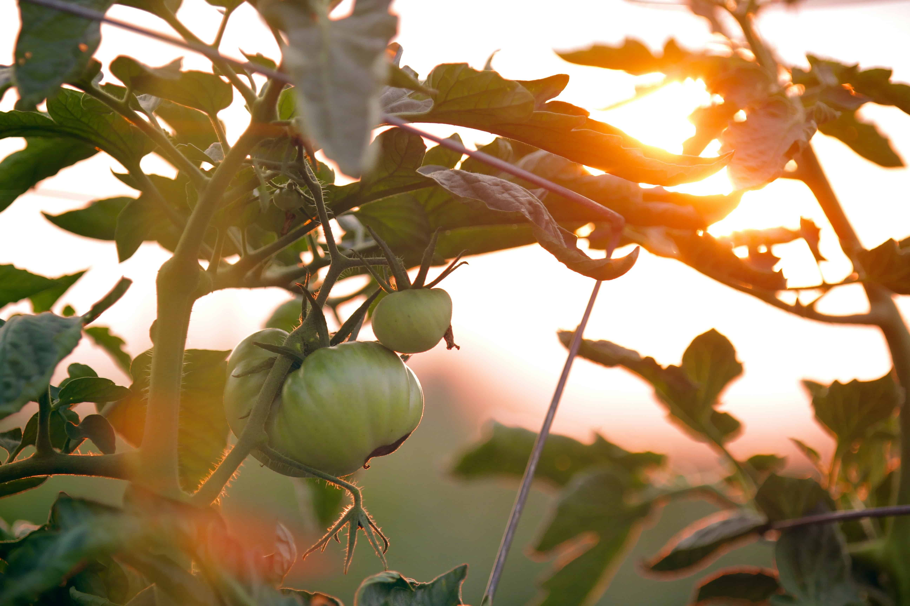

Garden Gypsy
200
Following
150
Followers
User Posts

How to Grow Your Own Food
Growing your own food can be rewarding and sustainable. Learn how to get started with these simple tips.

Gardening for Beginners
Starting a garden is easier than you think! Here are the basics for beginners.

Eco-Friendly Gardening Tips
Make your garden more eco-friendly with these practical tips.